Chapter 11 Imagery and Classification Models
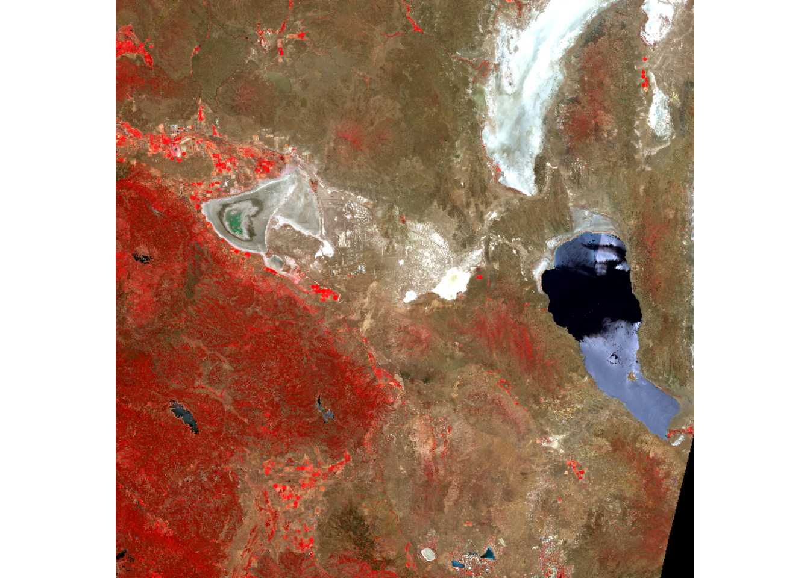
This chapter explores the use of satellite imagery, such as this Sentinel-2 scene (from 28 June 2021) of part of the northern Sierra Nevada, CA, to Pyramid Lake, NV, including display methods (such as the “false color” above) and imagery analysis methods. After we’ve learned how to read the data and cropped it to fit our study area in Red Clover Valley, we’ll try some machine language classifiers to see if we can make sense of the patterns of hydric to xeric vegetation in a meadow under active restoration.
Image analysis methods are important for environmental research and are covered much more thoroughly in the discipline of remote sensing. Some key things to learn more about are the nature of the electromagnetic spectrum and especially bands of that spectrum that are informative for land cover and especially vegetation detection, and the process of imagery classification. We’ll be using satellite imagery that includes a range of the electromagnetic spectrum from visible to short-wave infrared.
11.1 Reading and Displaying Sentinel-2 Imagery
We’ll work with 10 and 20 m Sentinel-2 data downloaded from Copernicus Open Access Hub (n.d.) as an entire scene from 20210602 and 20210628, providing cloud-free imagery of Red Clover Valley in the northern Sierra Nevada, where we are doing research on biogeochemical cycles and carbon sequestration from meadow restoration with The Sierra Fund (Clover Valley Ranch Restoration, the Sierra Fund (n.d.)).
Download the image zip files from…
https://sfsu.box.com/s/zx9rvbxdss03rammy7d72rb3uumfzjbf
…and extract into the folder ~/sentinel2/ – the ~ referring to your Home folder (typically Documents). (See the code below to see how one of the two images is read.) Make sure the folders stored there have names ending in .SAFE. The following are the two we’ll be using:
S2B_MSIL2A_20210603T184919_N0300_R113_T10TGK_20210603T213609.SAFES2A_MSIL2A_20210628T184921_N0300_R113_T10TGK_20210628T230915.SAFE
library(stringr)
library(terra)
imgFolder <- paste0("S2A_MSIL2A_20210628T184921_N0300_R113_T10TGK_20210628T230915.",
"SAFE\\GRANULE\\L2A_T10TGK_A031427_20210628T185628")
img20mFolder <- paste0("~/sentinel2/",imgFolder,"\\IMG_DATA\\R20m")
imgDateTime <- str_sub(imgFolder,12,26)
imgDateTime## [1] "20210628T184921"As documented at Copernicus Open Access Hub (n.d.), Sentinel-2 imagery is collected at three resolutions, with the most bands at the coarsest (60 m) resolution. The bands added at that coarsest resolution are not critical for our work as they relate to oceanographic and atmospheric research, and our focus will be on land cover and vegetation in a terrestrial area. So we’ll work with four bands at 10 m and an additional six bands at 20 m resolution:
10 m bands
- B02 - Blue 0.490 \(\mu\)m
- B03 - Green 0.560 \(\mu\)m
- B04 - Red 0.665 \(\mu\)m
- B08 - NIR 0.842 \(\mu\)m
20 m bands
- B02 - Blue 0.490 \(\mu\)m
- B03 - Green 0.560 \(\mu\)m
- B04 - Red 0.665 \(\mu\)m
- B05 - Red Edge 0.705 \(\mu\)m
- B06 - Red Edge 0.740 \(\mu\)m
- B07 - Red Edge 0.783 \(\mu\)m
- B8A - NIR 0.865 \(\mu\)m
- B11 - SWIR 1.610 \(\mu\)m
- B12 - SWIR 2.190 \(\mu\)m
sentinelBands <- paste0("B",c("02","03","04","05","06","07","8A","11","12"))
sentFiles <- paste0(img20mFolder,"/T10TGK_",imgDateTime,"_",
sentinelBands,"_20m.jp2")
sentinel <- rast(sentFiles)
sentinelBands## [1] "B02" "B03" "B04" "B05" "B06" "B07" "B8A" "B11" "B12"11.1.1 Individual bands
The Sentinel-2 data is in a 12-bit format, ranging as integers from 0 to 4,095, but are preprocessed to represent reflectances at the base of the atmosphere.
We’ll start by looking at four key bands – green, red, NIR, SWIR (B11) – and plot these in a gray scale (Figure 11.1).
par(mfrow=c(2,2))
plot(sentinel$B03, main = "Green", col=gray(0:4095 / 4095))
plot(sentinel$B04, main = "Red", col=gray(0:4095 / 4095))
plot(sentinel$B8A, main = "NIR", col=gray(0:4095 / 4095))
plot(sentinel$B11, main = "SWIR (B11)", col=gray(0:4095 / 4095))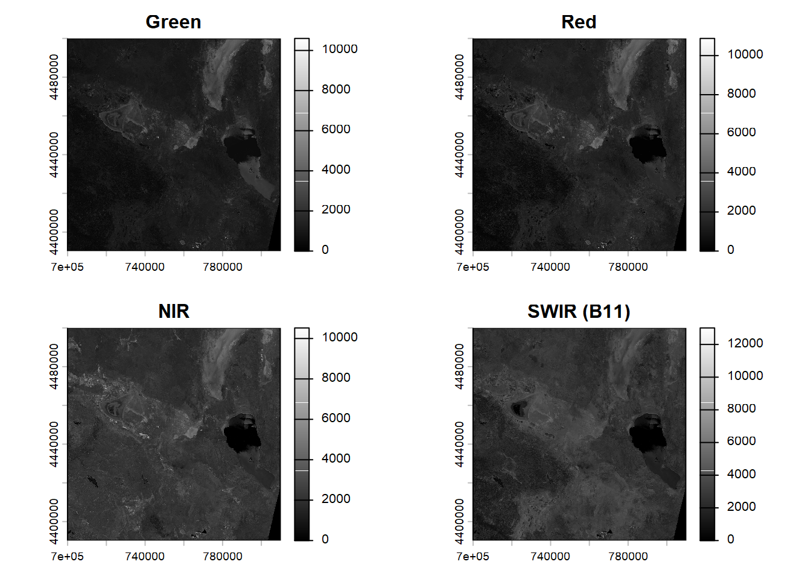
FIGURE 11.1: Four bands of a Sentinel-2 scene from 20210628.
11.1.2 Spectral subsets to create three-band R-G-B and NIR-R-G for visualization
Displaying the imagery three bands at a time (displayed as RGB on our computer screen) is always a good place to start (Figure 11.2), and two especially useful band sets are RGB itself – so looking like a conventional color aerial photography – and “false color” that includes a band normally invisible to our eyes, such as near infrared that reflects chlorophyll in healthy plants. In standard “false color”, surface-reflected near-infrared is displayed as red, reflected red is displayed as green, and green is displayed as blue. Some advantages of this false color display include:
- Blue is not included at all, which helps reduce haze.
- Water bodies absorb NIR, so appear very dark in the image.
- Chlorophyll strongly reflects NIR, so healthy vegetation is bright red.
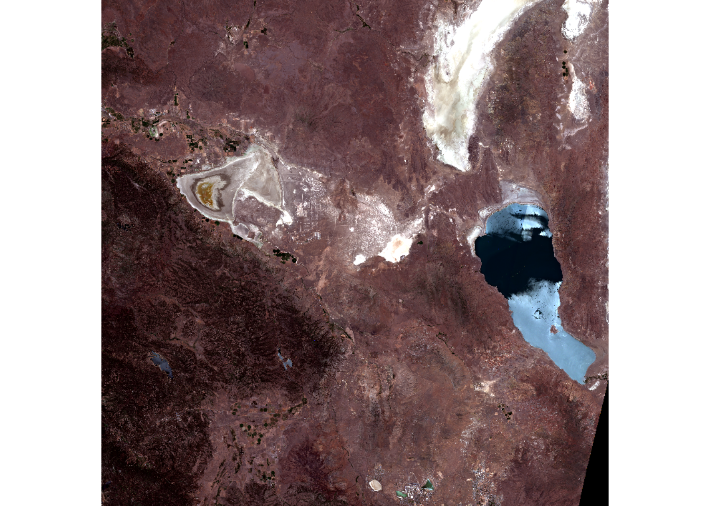
FIGURE 11.2: R-G-B image from Sentinel-2 scene 20210628.
We can also spectrally subset to get NIR (B8A, the 7th band of the 20 m multispectral raster we’ve created). See the first figure in this chapter for the NIR-R-G image displayed with plotRGB.
11.1.3 Crop to study area extent
The Sentinel-2 scene covers a very large area, more than 100 km on each side, 12,000 km2 in area. The area we are interested in – Red Clover Valley – is enclosed in an area of about 100 km2, so we’ll crop the scene to fit this area (Figures 11.3 and 11.4).
RCVext <- ext(715680,725040,4419120,4429980)
sentRCV <- crop(sentinel,RCVext)
sentRGB <- subset(sentRCV,3:1)
plotRGB(sentRGB,stretch="lin")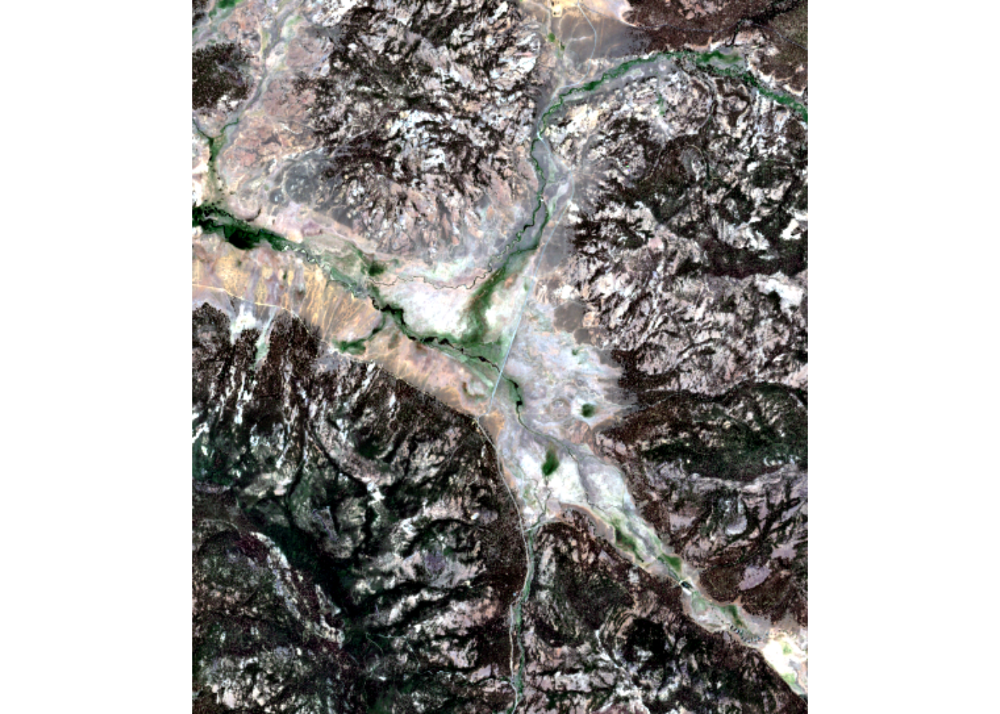
FIGURE 11.3: Color image from Sentinel-2 of Red Clover Valley, 20210628.
NIR-R-G:

FIGURE 11.4: NIR-R-G image from Sentinel-2 of Red Clover Valley, 20210628.
11.1.4 Saving results
Optionally, you may want to save this cropped image to call it up quicker at a later time. We’ll build a simple name with the date and time as part of it.
11.1.5 Band scatter plots
Using scatter plots helps us to to understand how we might employ multiple bands in our analysis. Red vs NIR is particularly intriguing, commonly creating a triangular pattern reflecting the high absorption of NIR by water yet high reflection by healthy vegetation which is visually green, so low in red (Figure 11.5).
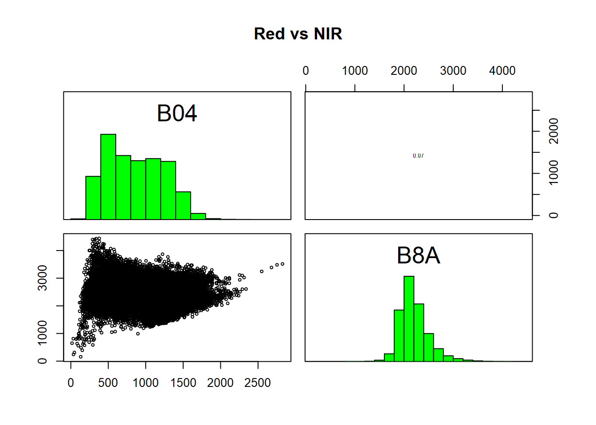
FIGURE 11.5: Relations between Red and NIR bands, Red Clover Valley Sentinel-2 image, 20210628
11.2 Spectral Profiles
A useful way to look at how our imagery responds to known vegetation/land-cover at imagery training polygons we’ll use later for supervised classification, we can extract values at points and create a spectral profile (Figure 11.6). We start by deriving points from the polygons we created based on field observations. One approach is to use polygon centroids (with centroids()), but to get more points from larger polygons, we’ll instead sample the polygons to get a total of ~1,000 points; but we’ll also set a Boolean variable doCentroids to possibly choose this option for this and all other samples in this notebook, if desired.
library(igisci); library(tidyverse)
trainPolys9 <- vect(ex("RCVimagery/train_polys9.shp"))
doCentroids <- F
if (doCentroids) {ptsRCV <- centroids(trainPolys9)
}else{ptsRCV <- spatSample(trainPolys9, 1000, method="regular")}
extRCV <- terra::extract(sentRCV, ptsRCV)
head(extRCV)## ID B02 B03 B04 B05 B06 B07 B8A B11 B12
## 1 1 276 580 473 991 2436 2882 3247 1944 1060
## 2 2 217 519 387 947 2482 2981 3319 1936 1005
## 3 3 276 580 473 991 2436 2882 3247 1944 1060
## 4 4 220 501 381 898 2434 2901 3230 1853 979
## 5 5 220 501 381 898 2434 2901 3230 1853 979
## 6 6 213 494 410 939 2404 2845 3231 1825 978specRCV <- aggregate(extRCV[,-1], list(ptsRCV$class), mean) |>
rename(cover=Group.1)
LCcolors <- RColorBrewer::brewer.pal(length(unique(trainPolys9$class)),"Set1")ggplot(data=pivot_specRCVdf, aes(x=band,y=reflectance,col=cover,group=cover)) + geom_line(size=1.5) +
labs(y="Reflectance 12 bit") +
scale_color_discrete(type=LCcolors)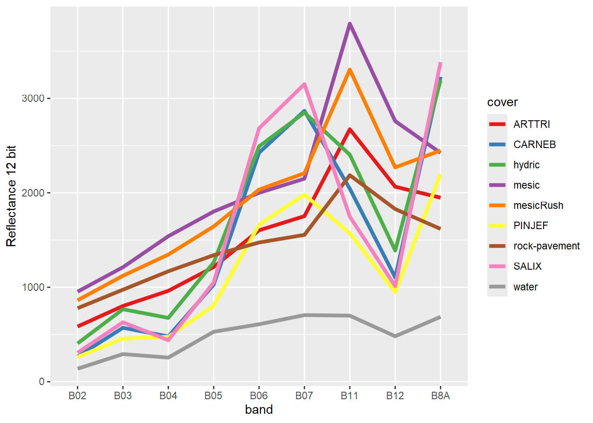
FIGURE 11.6: Spectral signature of nine-level training polygons, 20 m Sentinel-2 imagery from 20210628.
One thing we can observe in the spectral signature is that some vegetation types are pretty similar; for instance mesic and mesicRush are very similar, as are hydric and CARNEB, so we might want to combine them, and have fewer categories. We also have a seven-level polygon classification, so we can build a reasonable color scheme (for the figure above, we just let the color system come up with as many colors as classes (9)) (Figure 11.7).
trainPolys7 <- vect(ex("RCVimagery/train_polys7.shp"))
if (doCentroids) {ptsRCV <- centroids(trainPolys7)
}else{ptsRCV <- spatSample(trainPolys7, 1000, method="regular")}
extRCV <- terra::extract(sentRCV, ptsRCV)
specRCV <- aggregate(extRCV[,-1], list(ptsRCV$class), mean)
specRCVdf <- specRCV|> rename(cover=Group.1)
coverColors <- c("darkgreen","cyan", "orange","gray","blue","green","red")
pivot_specRCVdf <- specRCVdf |>
pivot_longer(cols=B02:B12, names_to="band", values_to="reflectance")
ggplot(data=pivot_specRCVdf, aes(x=band,y=reflectance,col=cover,group=cover)) + geom_line(size=1.5) +
labs(y="Reflectance 12 bit") +
scale_color_discrete(type=coverColors)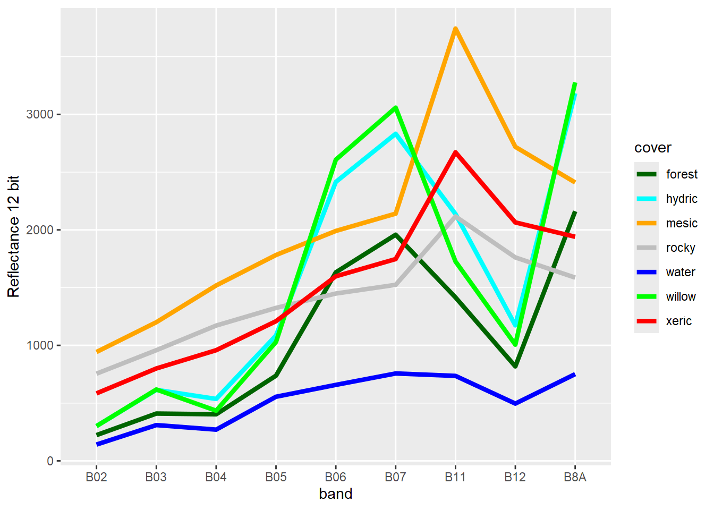
FIGURE 11.7: Spectral signature of six-level training polygons, 20 m Sentinel-2 imagery from 20210628
From this spectral signature, we can see that at least at this scale, there’s really no difference between the spectral response hydric and willow. The structure of the willow copses can’t be distinguished from the herbaceous hydric sedges with 20 m pixels. Fortunately, in terms of hydrologic response, willows are also hydric plants so we can just recode willow as hydric (Figure 11.8).
library(tidyverse)
trainPolys6 <- trainPolys7
trainPolys6[trainPolys6$class=="willow"]$class <- "hydric"
if (doCentroids) {ptsRCV <- centroids(trainPolys6)
}else{ptsRCV <- spatSample(trainPolys6, 1000, method="regular")}
extRCV <- terra::extract(sentRCV, ptsRCV)
specRCV <- aggregate(extRCV[,-1], list(ptsRCV$class), mean)
specRCVdf <- specRCV|> rename(cover=Group.1)coverColors <- c("darkgreen","green","orange","gray","blue","red")
pivot_specRCVdf <- specRCVdf |>
pivot_longer(cols=B02:B12, names_to="band", values_to="reflectance")
ggplot(data=pivot_specRCVdf, aes(x=band,y=reflectance,col=cover,group=cover)) + geom_line(size=1.5) +
labs(y="Reflectance 12 bit") +
scale_color_discrete(type=coverColors)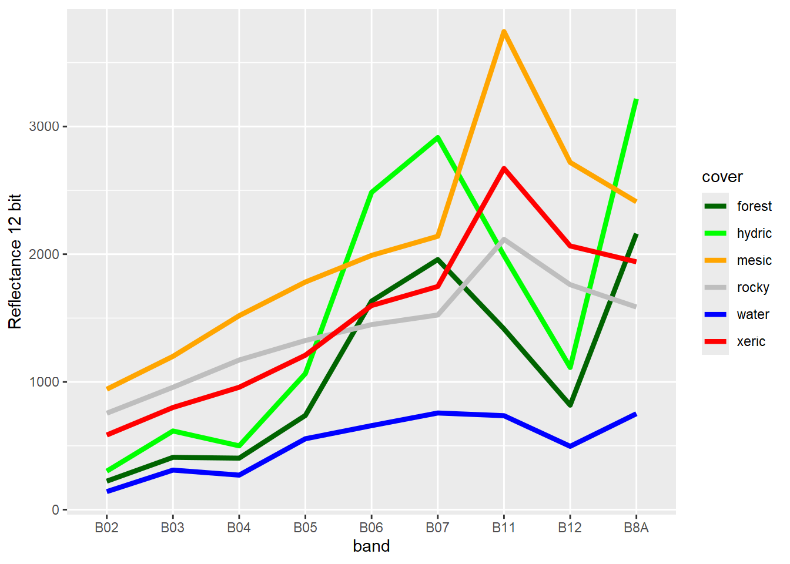
FIGURE 11.8: Spectral signature of six-level training polygons, 20 m Sentinel-2 imagery from 20210628
11.3 Map Algebra and Vegetation Indices
We can also do pixel-wise calculations, the map algebra method (Tomlin (1990)) used in raster GIS. We’ll use it to create vegetation indices, which are widely used as a single quantitative measure to relate to phenological change, moisture, and nutrients.
11.3.1 Vegetation indices
The venerable Normalized Difference Vegetation Index (NDVI) uses NIR (Sentinel2 20m: B8A) and RED (Sentinel2 20m: B04) in a ratio that normalizes NIR with respect to visible (usually red) (Figure 11.9).
\[ NDVI = \frac{NIR-RED}{NIR+RED} \]
ndviRCV <- (sentRCV$B8A - sentRCV$B04)/
(sentRCV$B8A + sentRCV$B04)
plot(ndviRCV, col=rev(terrain.colors(10)), main=paste('NDVI',imgDateTime))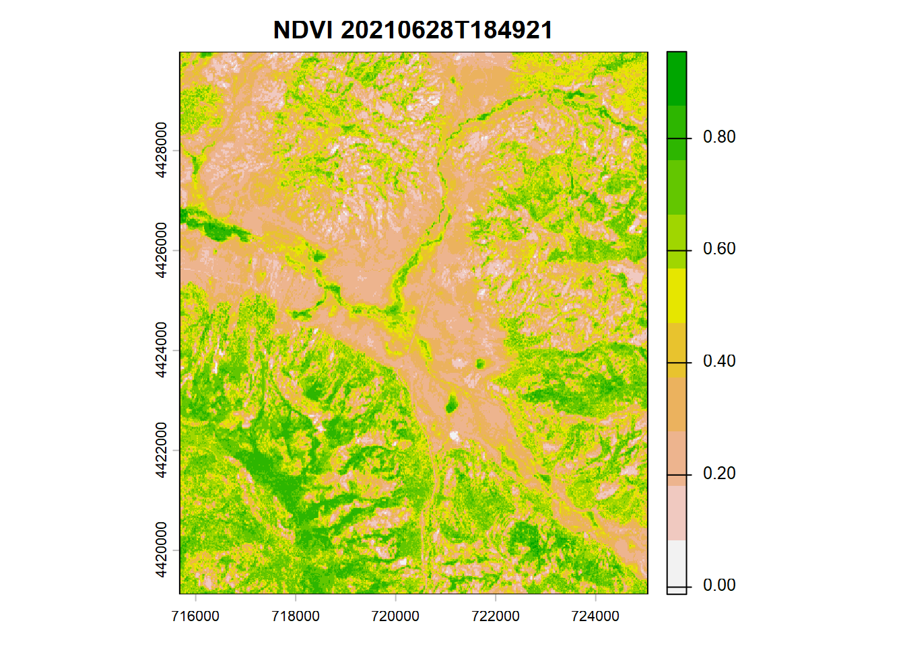
FIGURE 11.9: NDVI from Sentinel-2 image, 20210628
11.3.2 Histogram
The histogram for an NDVI is ideally above zero as this one is (Figure 11.10), with the values approaching 1 representing pixels with a lot of reflection in the near infrared, so typically healthy vegetation. Standing water can cause values to go negative, but with 20 m pixels there’s not enough water in the creeks to create a complete pixel of open water.
hist(ndviRCV, main='Normalized Difference Vegetation Index', xlab='NDVI',
ylab='Frequency',col='#6B702B',xlim=c(-1,1),breaks=40,xaxt='n')
axis(side=1,at=seq(-1,1,0.2), labels=seq(-1,1,0.2))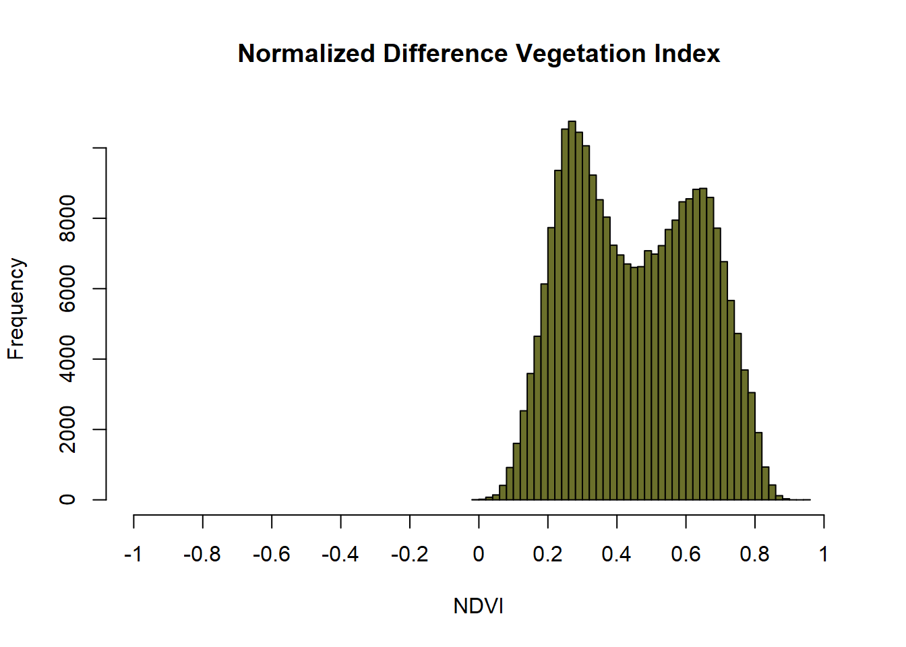
FIGURE 11.10: NDVI histogram, Sentinel-2 image, 20210628
11.3.3 Other vegetation indices
With the variety of spectral bands available on satellite imagery comes a lot of possibilities for other vegetation (and non-vegetation) indices.
One that has been used to detect moisture content in plants is the Normalized Difference Moisture Index \(NDMI = \frac{NIR-SWIR}{NIR+SWIR}\), which for Sentinel-2 20 m imagery would be \(\frac{B8A-B11}{B8A+B11}\) (Figure 11.11).
ndmiRCV <- (sentRCV$B8A - sentRCV$B11)/
(sentRCV$B8A + sentRCV$B11)
plot(ndmiRCV, col=rev(terrain.colors(10)), main=paste('NDMI',imgDateTime))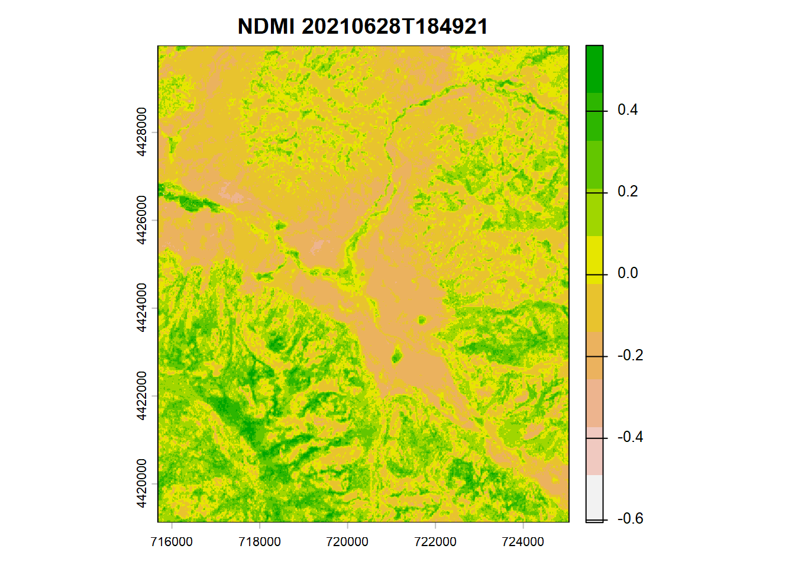
FIGURE 11.11: NDMI from Sentinel-2 image, 20210628
In contrast to NDVI, the NDMI histogram extends to negative values (Figure 11.12).
hist(ndmiRCV, main='Normalized Difference Moisture Index', xlab='NDMI',
ylab='Frequency',col='#26547C',xlim=c(-1,1),breaks=40,xaxt='n')
axis(side=1,at=seq(-1,1,0.2), labels=seq(-1,1,0.2))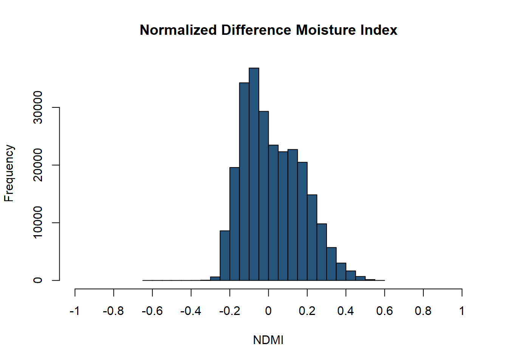
FIGURE 11.12: NDMI histogram, Sentinel-2 image, 20210628
Another useful index – Normalized Difference Greenness Index (NDGI) uses three bands: NIR, Red, and Green (Yang et al. (2019)), and was first proposed for MODIS but can be varied slightly for Sentinel-2. It has the advantage of using the more widely available four-band imagery, such as is available in the 10 m Sentinel-2 product, 3 m PlanetScope, or multispectral drone imagery using a MicaSense, which for their Altum camera at 120 m above ground is 5.4 cm. We’ll stick with the 20 m Sentinel-2 product for now and produce a plot (Figure 11.13) and a histogram (Figure 11.14).
\[ NDGI=\frac{0.616GREEN+0.384NIR-RED}{0.616GREEN+0.384NIR+RED} \]
ndgiRCV <- (0.616 * sentRCV$B03 + 0.384 * sentRCV$B8A - sentRCV$B04)/
(0.616 * sentRCV$B03 + 0.384 * sentRCV$B8A + sentRCV$B04)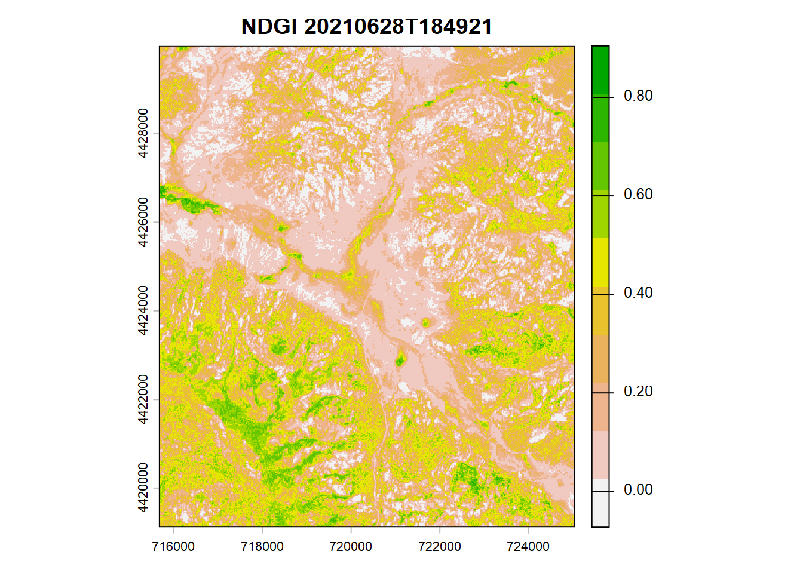
FIGURE 11.13: NDGI from Sentinel-2 image, 20210628
hist(ndgiRCV, main='Normalized Difference Greenness Index',
xlab='NDGI',ylab='Frequency',
col='#38635A',xlim=c(-1,1),breaks=40,xaxt='n')
axis(side=1,at=seq(-1,1,0.2), labels=seq(-1,1,0.2))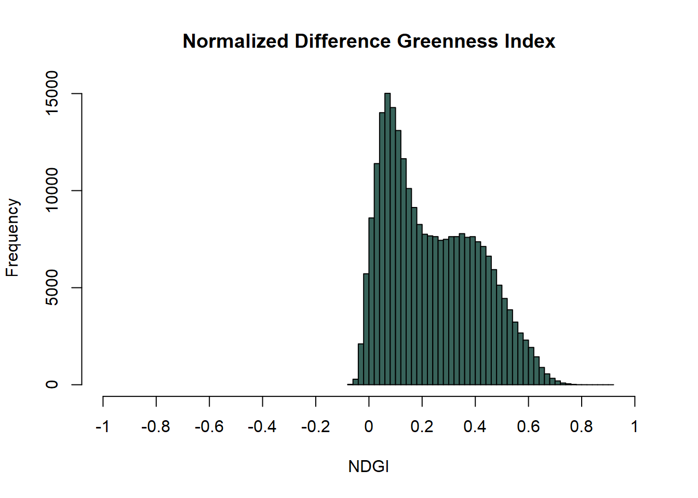
FIGURE 11.14: NDGI histogram, Sentinel-2 image, 20210628
11.4 Unsupervised Classification with k-means
We’ll look at supervised classification next, where we’ll provide the classifier known vegetation or land cover types, but with unsupervised we just provide the number of classes. We’ll use the NDGI we just derived above and start by creating a vector from the values:
## num [1:254124, 1] 0.356 0.429 0.4 0.359 0.266 ...
## - attr(*, "dimnames")=List of 2
## ..$ : NULL
## ..$ : chr "B03"We’ll then run the kmeans function to derive clusters:
Now we convert the vector 2.6.1 back into a matrix 2.6.3 with the same dimensions as the original image…
… and map the unsupervised classification (Figure 11.15). For the five classes generated, we’d need to follow up by overlaying with known land covers to see what it’s picking up, but we’ll leave that for the supervised classification next.
library(RColorBrewer)
LCcolors <- brewer.pal(length(unique(values(kimg))),"Set1")
plot(kimg, main = 'Unsupervised classification', col = LCcolors, type="classes")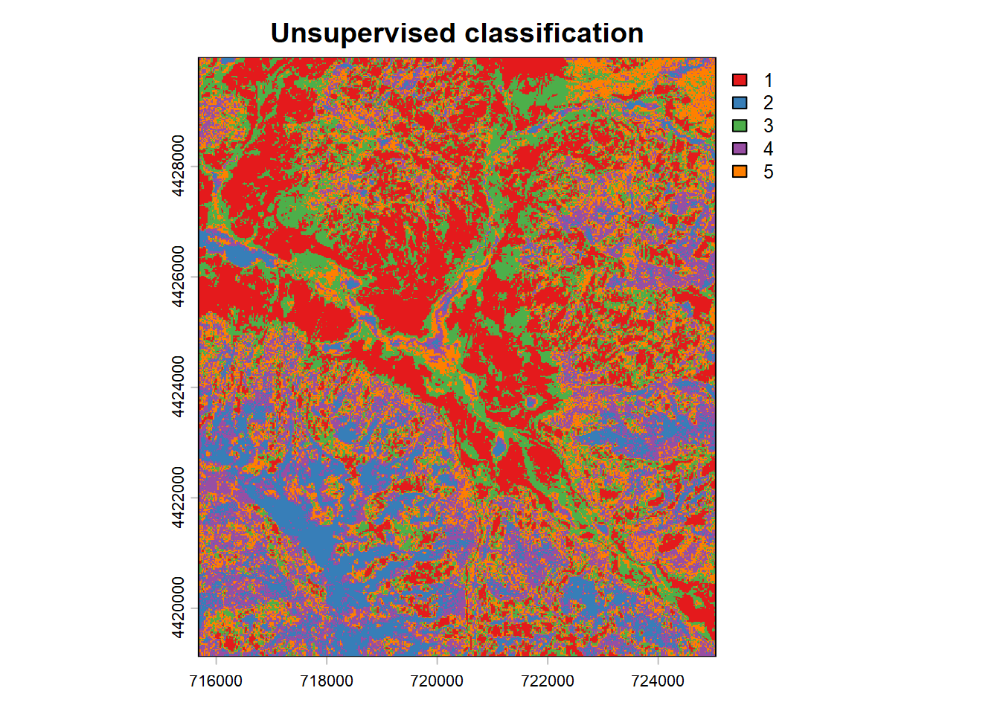
FIGURE 11.15: Unsupervised k-means classification, Red Clover Valley, Sentinel-2, 20210628
11.5 Machine Learning Classification of Imagery
Using machine learning algorithms is one approach to classification, whether that classification is of observations in general or pixels of imagery. We’re going to focus on a supervised classification method to identify land cover from imagery or other continuous raster variables (such as elevation or elevation-derived rasters such as slope, curvature, and roughness), employing samples of those variables called training samples.
It’s useful to realize that the modeling methods we use for this type of imagery classification are really no different at the core from methods we’d use to work with continuous variables that might not even be spatial. For example, if we leave off the classification process for a moment, a machine learning algorithm might be used to predict a response result from a series of predictor variables, like predicting temperature from elevation and latitude, or acceleration might be predicted by some force acting on a body. So the first model might be used to predict the temperature of any location (within the boundary of the study area) given an elevation and latitude; or the second model might predict an acceleration given the magnitude of a force applied to the body (maybe of a given mass). A classification model varies on this by predicting a nominal variable like type of land cover; some other types of responses might be counts (using a Poisson model) or probabilities (using a logistic model).
The imagery classification approach adds to this model an input preparation process and an output prediction process:
- A training set of points and polygons are created that represent areas of known classification such as land cover like forest or wetland, used to identify values of the predictor variables (e.g. imagery bands).
- A predicted raster is created using the model applied to the original rasters.
We’ll use a machine learning model called Classification and Regression Trees (CART) that is one of the simplest to understand in terms of the results it produces, which includes a display of the resulting classification decision “tree”. We have collected field observations of vegetation/land cover types in our meadow, so can see if we can use these to train a classification model. You’ll recognize our vegetation types (Figure 11.16 and 11.17) from the spectral signatures above. (We’ll start by reading in the data again so this section doesn’t depend on the above code.) To best see the locations of training samples, many of which are small compared to the overall map extent, two maps are used: first with an imagery basemap, then color-filled over a simple basemap.
11.5.1 Read imagery and training data and extract sample values for training
library(terra); library(stringr); library(tmap)
imgFolder <- paste0("S2A_MSIL2A_20210628T184921_N0300_R113_T10TGK_20210628T230915.",
"SAFE\\GRANULE\\L2A_T10TGK_A031427_20210628T185628")
img20mFolder <- paste0("~/sentinel2/",imgFolder,"\\IMG_DATA\\R20m")
imgDateTime <- str_sub(imgFolder,12,26)
sentinelBands <- paste0("B",c("02","03","04","05","06","07","8A","11","12"))
sentFiles <- paste0(img20mFolder,"/T10TGK_",imgDateTime,"_",sentinelBands,
"_20m.jp2")
sentinel <- rast(sentFiles)
names(sentinel) <- sentinelBands
RCVext <- ext(715680,725040,4419120,4429980)
sentRCV <- crop(sentinel,RCVext)
trainPolys <- vect(ex("RCVimagery/train_polys7.shp"))
trainPolys[trainPolys$class=="willow"]$class <- "hydric"
if (doCentroids) {ptsRCV <- centroids(trainPolys)
}else{ptsRCV <- spatSample(trainPolys, 1000, method="regular")}library(maptiles)
trainPolysSF <- sf::st_as_sf(trainPolys)
basemap <- get_tiles(trainPolysSF, provider="Esri.WorldImagery")
bounds=tmaptools::bb(trainPolysSF, ext=1.05)
trainImg <- tm_graticules(alpha=0.5, col="gray") +
tm_shape(basemap,bbox=bounds) + tm_rgb() + # tm_mv("red","green","blue")) +
# tm_basemap("Esri.WorldImagery", alpha=0.5) + # Esri.WorldGrayCanvas Esri.WorldImagery
tm_shape(trainPolysSF) +
tm_polygons(fill=NA, col="class",
col.scale=tm_scale_categorical(values=coverColors),
col.legend=tm_legend(frame=F))train <- tm_graticules(alpha=0.5, col="gray") +
# tm_basemap("Esri.WorldGrayCanvas", alpha=0.5) + # Esri.WorldGrayCanvas Esri.WorldImagery
tm_shape(trainPolysSF) +
tm_polygons(fill="class", col="class", #title=NA
fill.scale=tm_scale_categorical(values=coverColors),
fill.legend=tm_legend(frame=F),
col.legend=tm_legend(show=F),
col.scale=tm_scale_categorical(values=coverColors))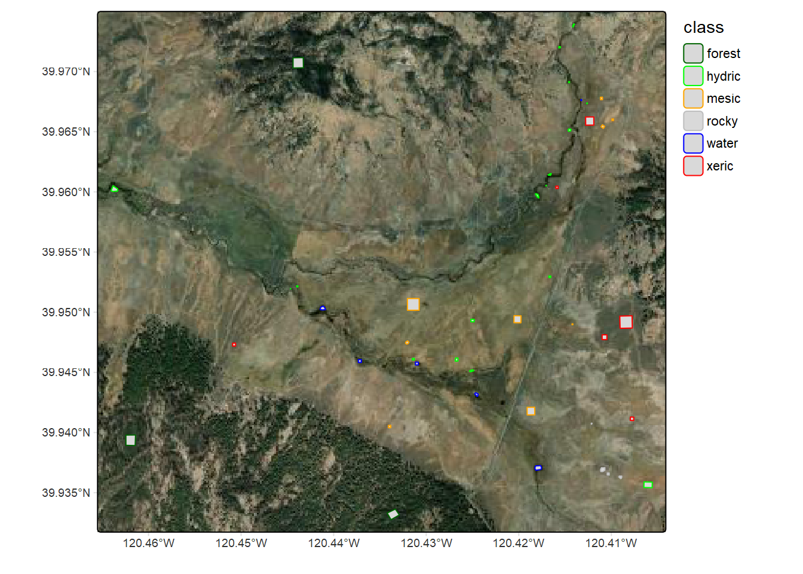
FIGURE 11.16: Training samples over imagery basemap
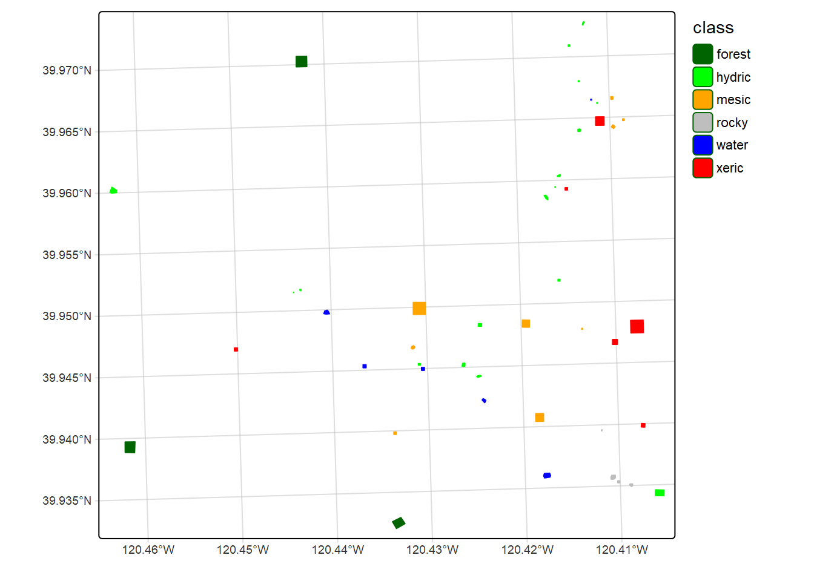
FIGURE 11.17: Training samples over simple basemap
11.5.2 Training the CART model
The Recursive Partitioning and Regression Trees package rpart fits the model.
library(rpart)
cartmodel <- rpart(as.factor(class)~., data = sampdataRCV,
method = 'class', minsplit = 5)Now we can display the decision tree using the rpart.plot (Figure 11.18). This function clearly shows where each variable (in our case imagery spectral bands) contributes to the classification, and together with the spectral signature analysis above, helps us evaluate how the process works and possibly how to improve our training data where distinction among classes is unclear.
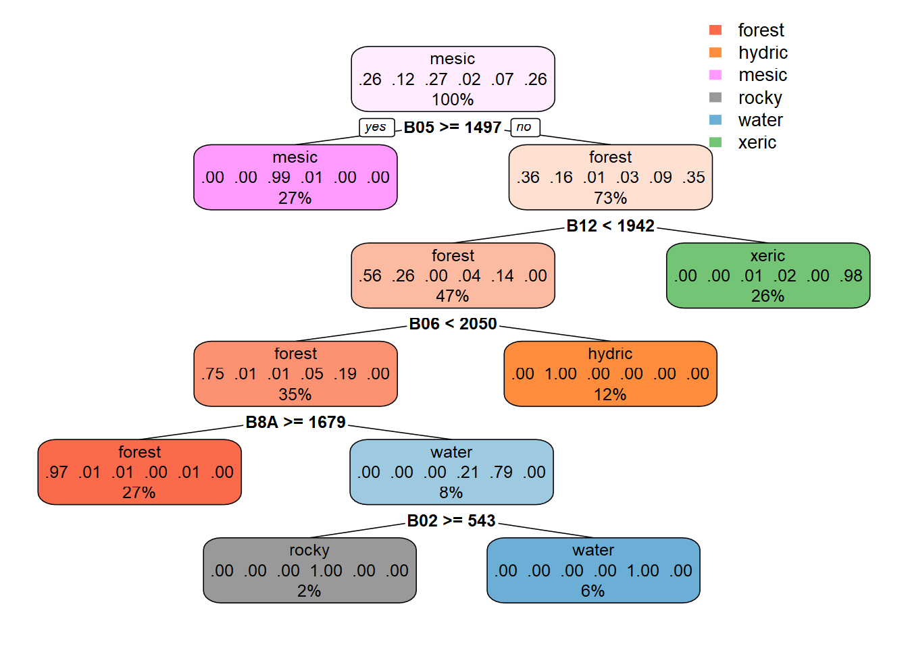
FIGURE 11.18: CART Decision Tree, Sentinel-2 20 m, date 20210628
11.5.3 Prediction using the CART model
Then we can use the model to predict the probabilities of each vegetation class for each pixel (Figure 11.19).
## class : SpatRaster
## size : 543, 468, 6 (nrow, ncol, nlyr)
## resolution : 20, 20 (x, y)
## extent : 715680, 725040, 4419120, 4429980 (xmin, xmax, ymin, ymax)
## coord. ref. : WGS 84 / UTM zone 10N (EPSG:32610)
## source(s) : memory
## names : forest, hydric, mesic, rocky, water, xeric
## min values : 0, 0, 0, 0, 0, 0
## max values : 0.97026, 1, 0.988889, 1, 1, 0.977099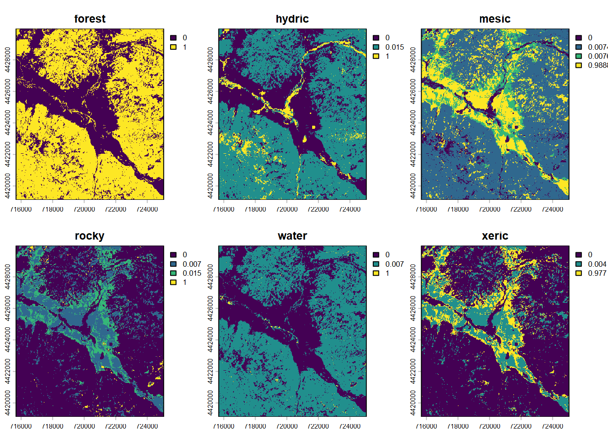
FIGURE 11.19: CART classification, probabilities of each class, Sentinel-2 20 m 20210628
Note the ranges of values, each extending to values approaching 1.0. If we had used the nine-category training set described earlier, we would find some categories with very low scores, such that they will never dominate a pixel. We can be sure from the above that we’ll get all categories used in the final output, and this will avoid potential problems in validation.
Now we’ll make a single SpatRaster showing the vegetation/land cover with the highest probability (Figure 11.20).
## class : SpatRaster
## size : 543, 468, 1 (nrow, ncol, nlyr)
## resolution : 20, 20 (x, y)
## extent : 715680, 725040, 4419120, 4429980 (xmin, xmax, ymin, ymax)
## coord. ref. : WGS 84 / UTM zone 10N (EPSG:32610)
## source(s) : memory
## name : which.max
## min value : 1
## max value : 6## class : SpatRaster
## size : 543, 468, 1 (nrow, ncol, nlyr)
## resolution : 20, 20 (x, y)
## extent : 715680, 725040, 4419120, 4429980 (xmin, xmax, ymin, ymax)
## coord. ref. : WGS 84 / UTM zone 10N (EPSG:32610)
## source(s) : memory
## categories : class
## name : class
## min value : forest
## max value : xericLCcolors <- c("green4","cyan","gold","grey90","mediumblue","red")
# tm_basemap("Esri.WorldGrayCanvas", alpha=0.5) + # Esri.WorldGrayCanvas Esri.WorldImagery
tm_shape(LC20m) +
tm_raster(col="class",
col.scale=tm_scale_categorical(values=LCcolors),
col.legend=tm_legend(frame=F)) +
tm_graticules(alpha=0.5, col="gray")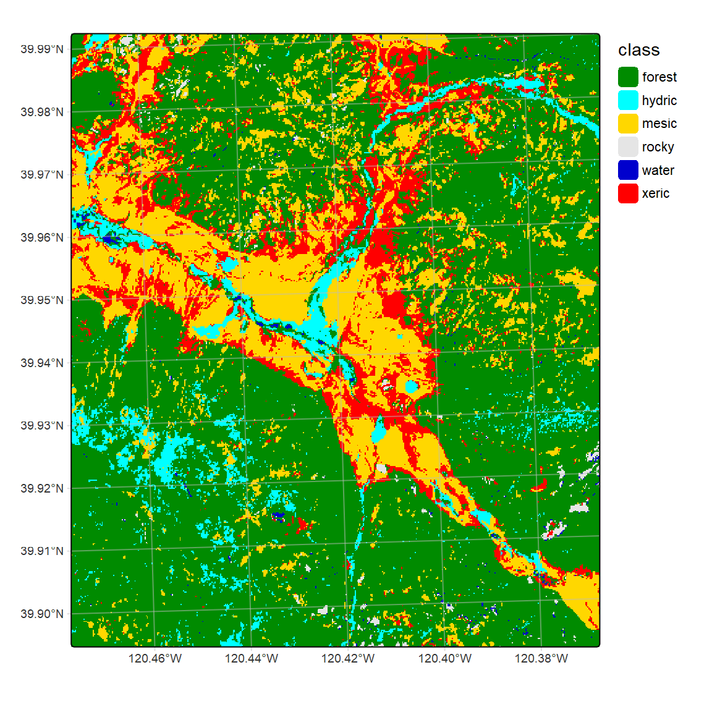
FIGURE 11.20: CART classification, highest probability class, Sentinel-2 20 m 20210628
We could look at landscape metrics, like the Shannon Diversity Index.
## # A tibble: 1 × 6
## layer level class id metric value
## <int> <chr> <int> <int> <chr> <dbl>
## 1 1 landscape NA NA shdi 1.05## # A tibble: 6 × 6
## layer level class id metric value
## <int> <chr> <int> <int> <chr> <dbl>
## 1 1 class 1 NA pland 63.9
## 2 1 class 2 NA pland 5.15
## 3 1 class 3 NA pland 19.5
## 4 1 class 4 NA pland 0.800
## 5 1 class 5 NA pland 0.320
## 6 1 class 6 NA pland 10.4To save the raster, we can write out the classification raster. I haven’t figured out how to get the attribute table written yet, but you at least get integers this way.
11.5.4 Validating the model
An important part of the imagery classification process is validation, where we look at how well the model works. The way this is done is pretty easy to understand, and requires having testing data in addition to the training data mentioned above. Testing data can be created in a variety of ways, commonly through field observations but also with finer resolution imagery like drone imagery. Since this is also how we train our data, often you’re selecting some for training, and a separate set for testing.
11.5.4.1 The “overfit model” problem
It’s important to realize that the accuracy we determine is only based on the training and testing data. The accuracy of the prediction of the classification elsewhere will likely be somewhat less than this, and if this is substantial our model is “overfit”. We don’t actually know how overfit a model truly is because that depends on how likely the conditions seen in our training and testing data also occur throughout the rest of the image; if those conditions are common, just not sampled, then the model might actually be pretty well fit.
In thinking about the concept of overfit models and selecting out training (and testing) sets, it’s useful to consider the purpose of our classification and how important it is that our predictions are absolutely reliable. In choosing training sets, accuracy is also important, so we will want to make sure that they are good representatives of the land cover type (assuming that’s our response variable). While some land covers are pretty clear (like streets or buildings), there’s a lot of fuzziness in the world: you might be trying to identify wetland conditions based on the type of vegetation growing, but in a meadow you can commonly find wetland species mixed in with more mesic species – to pick a reliable wetland sample we might want to only pick areas with only wetland species (and this can get tricky since there are many challenges of “obligate wetland” or “facultative wetland” species.) The CART model applied a probability model for each response value, which we then used to derive a single prediction based on the maximum probability.
11.5.4.2 Cross validation : 20 m Sentinel-2 CART model
In cross-validation, we use one set of data and run the model multiple times, and for each validating with a part of the data not used for training the model. In k-fold cross validation, k represents the number of groups and number of models. The k value can be up to the number of observations, but you do need to consider processing time, and you may not get much more reliable assessments with using all of the observations. We’ll use five folds.
The method we’ll use to cross-validate the model and derive various accuracy metrics is based on code provided in the “Remote Sensing with terra” section of https://rspatial.org by Aniruddha Ghosh and Robert J. Hijmans (Hijmans (n.d.)).
set.seed(42)
k <- 5 # number of folds
j <- sample(rep(1:k, each = round(nrow(sampdataRCV))/k))
table(j)## j
## 1 2 3 4 5
## 199 199 199 199 199x <- list()
for (k in 1:5) {
train <- sampdataRCV[j!= k, ]
test <- sampdataRCV[j == k, ]
cart <- rpart(as.factor(class)~., data=train, method = 'class',
minsplit = 5)
pclass <- predict(cart, test, na.rm = TRUE)
# assign class to maximum probability
pclass <- apply(pclass, 1, which.max)
# create a data.frame using the reference and prediction
x[[k]] <- cbind(test$class, as.integer(pclass))
}11.5.4.3 Accuracy and error metrics
Now that we have our test data with observed and predicted values, we can derive accuracy metrics. There have been many metrics developed to assess model classification accuracy and error. We can look at accuracy either in terms of how well a model works or what kinds of errors it has; these are complements. We’ll look at Producer’s and User’s accuracies (and their complements omission and commission errors) below, and we’ll start by building a confusion matrix, which will allow us to derived the various metrics.
Confusion Matrix One way to look at (and, in the process, derive) these metrics is to build a confusion matrix, which puts the observed reference data and predicted classified data in rows and columns. These can be set up in either way, but in both cases the diagonal shows those correctly classified, with the row and column names from the same list of land cover classes that we’ve provided to train the model.
y <- do.call(rbind, x)
y <- data.frame(y)
colnames(y) <- c('observed', 'predicted')
conmat <- table(y) # confusion matrix
#str(conmat)# change the name of the columns and rows to LCclass
if(length(LCclass)==dim(conmat)[2]){
colnames(conmat) <- LCclass}else{
print("Column dimension/LCclass array mismatch")
print(str(LCclass))
print(str(conmat))
}
if(length(LCclass)==dim(conmat)[1]){
rownames(conmat) <- LCclass}else{
print("Dimension/array mismatch")
print(str(LCclass))
print(str(conmat))
}## predicted
## observed forest hydric mesic rocky water xeric
## forest 259 0 0 0 2 0
## hydric 4 116 0 0 0 0
## mesic 2 0 267 0 0 2
## rocky 0 0 3 16 0 4
## water 2 0 0 0 64 0
## xeric 0 0 3 0 0 254Overall Accuracy The overall accuracy is simply the overall ratio of the number correctly classified divided by the total, so the sum of the diagonal divided by n.
n <- sum(conmat) # number of total cases
diag <- diag(conmat) # number of correctly classified cases per class
OA20 <- sum(diag) / n # overall accuracy
OA20## [1] 0.9779559kappa Another overall measure of accuracy is Cohen’s kappa statistic (Cohen (1960)), which measures inter-rater reliability for categorical data. It’s somewhat similar to the goal of chi square in that it compares expected vs. observed conditions, only chi square is limited to two cases or Boolean data.
rowsums <- apply(conmat, 1, sum)
p <- rowsums / n # observed (true) cases per class
colsums <- apply(conmat, 2, sum)
q <- colsums / n # predicted cases per class
expAccuracy <- sum(p*q)
kappa20 <- (OA20 - expAccuracy) / (1 - expAccuracy)
kappa20## [1] 0.9713693Table of Producer’s and User’s accuracies
We can look at accuracy either in terms of how well a model works or what kinds of errors it has; these are complements. Both of these allow us to look at accuracy of classification for each class.
- The so-called “Producer’s Accuracy” refers to how often real conditions on the ground are displayed in the classification, from the perspective of the map producer, and is the complement of errors of omission.
- The so-called “User’s Accuracy” refers to how often the class will actually occur on the ground, so it is from the perspective of the user (though this is a bit confusing) and is the complement of errors of commission.
PA <- diag / colsums # Producer accuracy
UA <- diag / rowsums # User accuracy
if(length(PA)==length(UA)){
outAcc <- data.frame(producerAccuracy = PA, userAccuracy = UA)
print(outAcc)}else{
print("length(PA)!=length(UA)")
print(PA)
print(UA)
}## producerAccuracy userAccuracy
## forest 0.9700375 0.9923372
## hydric 1.0000000 0.9666667
## mesic 0.9780220 0.9852399
## rocky 1.0000000 0.6956522
## water 0.9696970 0.9696970
## xeric 0.9769231 0.988326811.6 Classifying with 10 m Sentinel-2 Imagery
The 10 m product of Sentinel-2 has much fewer bands (4), but the finer resolution improves its visual precision. The four bands are the most common baseline set used in multispectral imagery: blue (B02, 490 nm), green (B03, 560 nm), red (B04, 665 nm), and NIR (B08, 842 nm). From this we can create color and NIR-R-G images, and the vegetation indices NDVI and NDGI, among others.
For the 10 m product, we won’t repeat many of the exploration steps we looked at above, such as the histograms, but go right to training and classification using CART.
imgFolder <- paste0("S2A_MSIL2A_20210628T184921_N0300_R113_T10TGK_20210628T230915.",
"SAFE\\GRANULE\\L2A_T10TGK_A031427_20210628T185628")
img10mFolder <- paste0("~/sentinel2/",imgFolder,"\\IMG_DATA\\R10m")
imgDateTime <- str_sub(imgFolder,12,26)
imgDateTime## [1] "20210628T184921"11.6.1 Subset bands (10 m)
The 10-m Sentinel-2 data includes only four bands blue (B02), green (B03), red (B04), and NIR (B08).
11.6.2 Crop to RCV extent and extract pixel values
This is similar to what we did for the 20 m data.
11.6.3 Training the CART model (10 m) and plot the tree
Again, we can plot the regression tree for the model using 10 m data (Figure 11.21).
library(rpart); library(rpart.plot)
cartmodel <- rpart(as.factor(class)~., data = sampdataRCV,
method = 'class', minsplit = 5)
rpart.plot(cartmodel, fallen.leaves=F)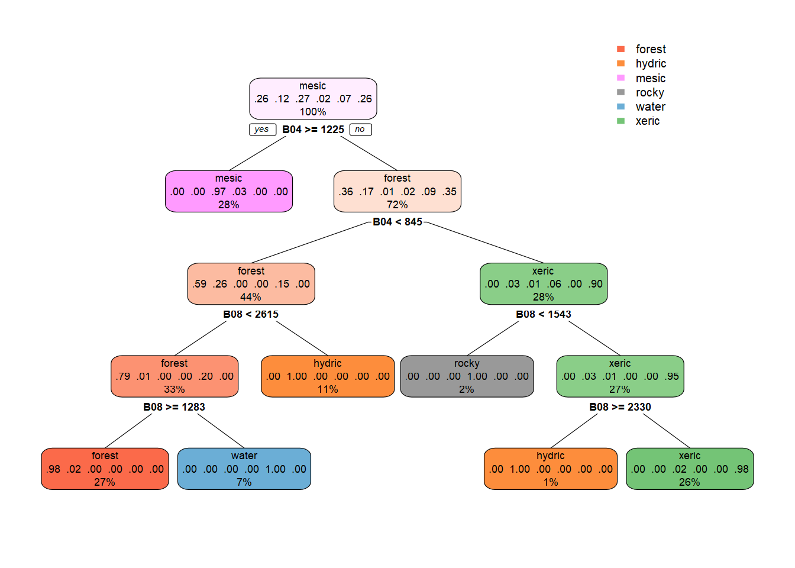
FIGURE 11.21: 10 m CART regression tree
11.6.4 Prediction using the CART model (10 m)
As with the 20 m prediction, we’ll start by producing a composite of all class probabilities by pixel (Figure 11.22)…
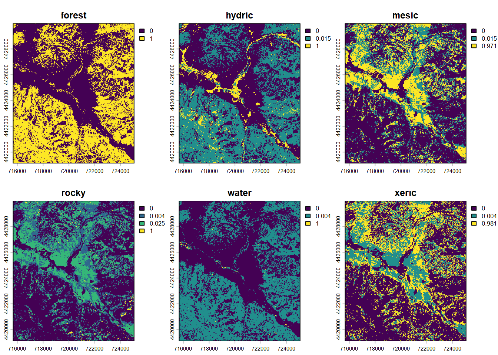
FIGURE 11.22: CART classification, probabilities of each class, Sentinel-2 10 m 20210628
LC10m <- which.max(CARTpred)
cls <- names(CARTpred)
df <- data.frame(id = 1:length(cls), class=cls)
levels(LC10m) <- df… and then map the class with the highest probability for each pixel (Figure 11.23).
tm_shape(LC10m) +
tm_raster(col="class",
col.scale=tm_scale_categorical(values=LCcolors),
col.legend=tm_legend(frame=F)) +
tm_graticules(alpha=0.5, col="gray")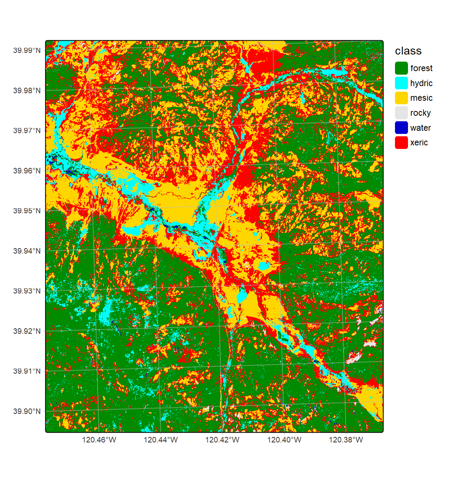
FIGURE 11.23: CART classification, highest probability class, Sentinel-2 10 m 20210628
11.6.4.1 Cross-validation : 10 m Sentinel-2 CART model
set.seed(42)
k <- 5 # number of folds
j <- sample(rep(1:k, each = round(nrow(sampdataRCV))/k))
x <- list()
for (k in 1:5) {
train <- sampdataRCV[j!= k, ]
test <- sampdataRCV[j == k, ]
cart <- rpart(as.factor(class)~., data=train, method = 'class',
minsplit = 5)
pclass <- predict(cart, test, na.rm = TRUE)
# assign class to maximum probablity
pclass <- apply(pclass, 1, which.max)
# create a data.frame using the reference and prediction
x[[k]] <- cbind(test$class, as.integer(pclass))
}11.6.4.2 Accuracy metrics : 10 m Sentinel-2 CART model
As with the 20 m model, we’ll look at the confusion matrix and the various accuracy metrics.
Confusion Matrix (10 m)
y <- do.call(rbind, x)
y <- data.frame(y)
colnames(y) <- c('observed', 'predicted')
conmat <- table(y) # confusion matrix# change the name of the columns and rows to LCclass
if(length(LCclass)==dim(conmat)[2]){
colnames(conmat) <- LCclass}else{
print("Confusion matrix column dimension/LCclass array mismatch")
print(str(LCclass))
print(str(conmat))
}
if(length(LCclass)==dim(conmat)[1]){
rownames(conmat) <- LCclass}else{
print("Confusion matrix row dimension/LCclass array mismatch")
print(str(LCclass))
print(str(conmat))
}## predicted
## observed forest hydric mesic rocky water xeric
## forest 260 0 0 0 1 0
## hydric 4 111 0 0 0 5
## mesic 0 0 264 0 0 7
## rocky 0 0 7 15 0 1
## water 2 0 0 0 64 0
## xeric 2 1 1 0 0 253Overall Accuracy (10 m)
n <- sum(conmat) # number of total cases
diag <- diag(conmat) # number of correctly classified cases per class
OA10 <- sum(diag) / n # overall accuracy
OA10## [1] 0.9689379kappa (10 m)
rowsums <- apply(conmat, 1, sum)
p <- rowsums / n # observed (true) cases per class
colsums <- apply(conmat, 2, sum)
q <- colsums / n # predicted cases per class
expAccuracy <- sum(p*q)
kappa10 <- (OA10 - expAccuracy) / (1 - expAccuracy)
kappa10## [1] 0.9596061User and Producer accuracy (10 m)
PA <- diag / colsums # Producer accuracy
UA <- diag / rowsums # User accuracy
outAcc <- data.frame(producerAccuracy = PA, userAccuracy = UA)
if(length(PA)==length(UA)){
outAcc <- data.frame(producerAccuracy = PA, userAccuracy = UA)
print(outAcc)}else{
print("length(PA)!=length(UA)")
print(PA)
print(UA)
}## producerAccuracy userAccuracy
## forest 0.9701493 0.9961686
## hydric 0.9910714 0.9250000
## mesic 0.9705882 0.9741697
## rocky 1.0000000 0.6521739
## water 0.9846154 0.9696970
## xeric 0.9511278 0.984435811.7 Classification Using Multiple Images Capturing Phenology
Most plants change their spectral response seasonally, a process referred to as phenology. In these montane meadows, phenological changes start with snow melt, followed by “green-up”, then senescence. 2019 was a particularly dry year, so the period from green-up to senescence was short. We’ll use a 3 June image as green-up, then a 28 June image as senescence.
Spring
library(terra); library(stringr); library(igisci)
imgFolderSpring <- paste0("S2B_MSIL2A_20210603T184919_N0300_R113_T10TGK_20210603",
"T213609.SAFE\\GRANULE\\L2A_T10TGK_A022161_20210603T185928")
img10mFolderSpring <- paste0("~/sentinel2/",imgFolderSpring,"\\IMG_DATA\\R10m")
imgDateTimeSpring <- str_sub(imgFolderSpring,12,26)Summer
imgFolderSummer <- paste0("S2A_MSIL2A_20210628T184921_N0300_R113_T10TGK_20210628",
"T230915.SAFE\\GRANULE\\L2A_T10TGK_A031427_20210628T185628")
img10mFolderSummer <- paste0("~/sentinel2/",imgFolder,"\\IMG_DATA\\R10m")
imgDateTimeSummer <- str_sub(imgFolderSummer,12,26)sentinelBands <- paste0("B",c("02","03","04","08"))
sentFilesSpring <- paste0(img10mFolderSpring,"/T10TGK_",
imgDateTimeSpring,"_",sentinelBands,"_10m.jp2")
sentinelSpring <- rast(sentFilesSpring)
names(sentinelSpring) <- paste0("spring",sentinelBands)
sentFilesSummer <- paste0(img10mFolderSummer,"/T10TGK_",
imgDateTimeSummer,"_",sentinelBands,"_10m.jp2")
sentinelSummer <- rast(sentFilesSummer)
names(sentinelSummer) <- paste0("summer",sentinelBands)RCVext <- ext(715680,725040,4419120,4429980)
sentRCVspring <- crop(sentinelSpring,RCVext)
sentRCVsummer <- crop(sentinelSummer,RCVext)blueSp <- sentRCVspring$springB02
greenSp <- sentRCVspring$springB03
redSp <- sentRCVspring$springB04
nirSp <- sentRCVspring$springB08
ndgiSp <- (0.616 * greenSp + 0.384 * nirSp - redSp)/
(0.616 * greenSp + 0.384 * nirSp + redSp)
blueSu <- sentRCVsummer$summerB02
greenSu <- sentRCVsummer$summerB03
redSu <- sentRCVsummer$summerB04
nirSu <- sentRCVsummer$summerB08
ndgiSu <- (0.616 * greenSu + 0.384 * nirSu - redSu)/
(0.616 * greenSu + 0.384 * nirSu + redSu)11.7.1 Create a 10-band stack from both images
Since we have two imagery dates and also a vegetation index (NDGI) for each, we have a total of 10 variables to work with. So we’ll put these together as a multi-band stack simply using c() with the various bands.
11.7.2 Extract the training data (10 m spring + summer)
We’ll repeat some of the steps where we read in the training data and set up the land cover classes, reducing the 7 to 6 classes, then extract from our new 10-band image stack the training data.
library(igisci)
trainPolys <- vect(ex("RCVimagery/train_polys7.shp"))
if (doCentroids) {ptsRCV <- centroids(trainPolys)
}else{ptsRCV <- spatSample(trainPolys, 1000, method="regular")}
LCclass <- c("forest","hydric","mesic","rocky","water","willow","xeric")
classdf <- data.frame(value=1:length(LCclass),names=LCclass)
trainPolys <- vect(ex("RCVimagery/train_polys7.shp"))
trainPolys[trainPolys$class=="willow"]$class <- "hydric"
ptsRCV <- spatSample(trainPolys, 1000, method="random")
LCclass <- c("forest","hydric","mesic","rocky","water","xeric")
classdf <- data.frame(value=1:length(LCclass),names=LCclass)
extRCV <- terra::extract(sentRCV, ptsRCV)[,-1] # REMOVE ID
sampdataRCV <- data.frame(class = ptsRCV$class, extRCV)11.7.3 CART model and prediction (10 m spring + summer)
library(rpart)
# Train the model
cartmodel <- rpart(as.factor(class)~.,
data = sampdataRCV, method = 'class', minsplit = 5)The CART model tree for the two-season 10 m example (Figure 11.24) interestingly does not end up with anything in the “rocky” pixels…
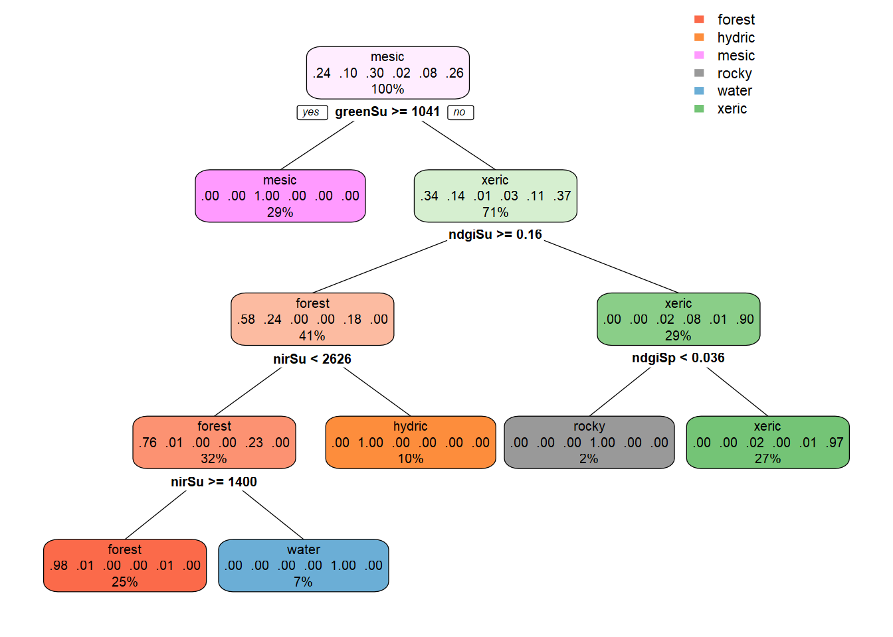
FIGURE 11.24: CART decision tree, Sentinel 10-m, spring and summer 2021 images
… and we can see in the probability map set that all “rocky” pixel probabilities are very low, below 0.03 (Figure 11.25) …
## |---------|---------|---------|---------|========================================= 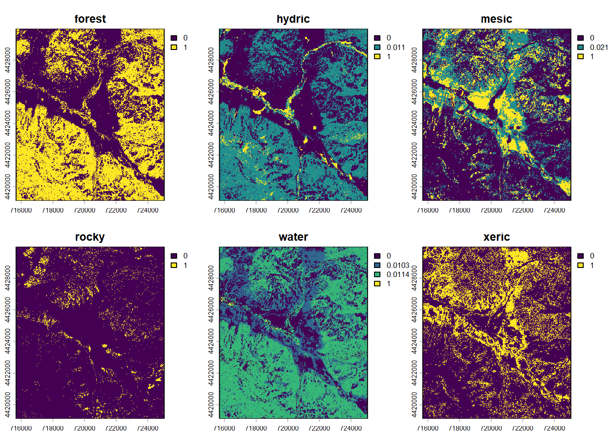
FIGURE 11.25: CART classification, probabilities of each class, Sentinel-2 10 m, 2021 spring and summer phenology
LCpheno <- which.max(CARTpred)
cls <- names(CARTpred)
df <- data.frame(id = 1:length(cls), class=cls)
levels(LCpheno) <- df… and thus no “rocky” classes are assigned (Figure 11.26).
LCcolors <- c("green4","cyan","gold","grey90","mediumblue","red")
tm_shape(LCpheno) +
tm_raster(col="class",
col.scale=tm_scale_categorical(values=LCcolors),
col.legend=tm_legend(frame=F)) +
tm_graticules(alpha=0.5, col="gray")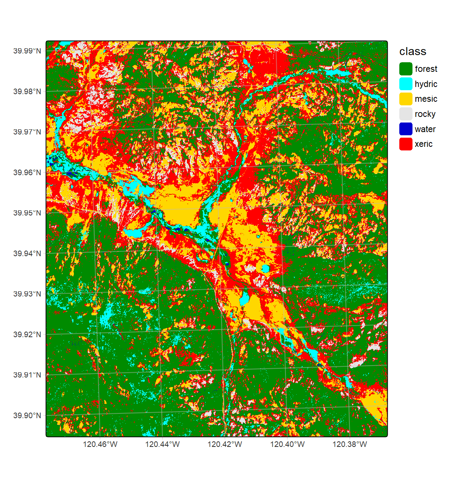
FIGURE 11.26: CART classification, highest probability class, Sentinel-2 10 m, 2021 spring and summer phenology
We might compare this plot with the two previous – the 20 m (Figure 11.20) and 10 m (Figure 11.23) classifications from 28 June.
11.7.3.1 Cross validation : CART model for 10 m spring + summer
set.seed(42)
k <- 5 # number of folds
j <- sample(rep(1:k, each = round(nrow(sampdataRCV))/k))
# table(j)x <- list()
for (k in 1:5) {
train <- sampdataRCV[j!= k, ]
test <- sampdataRCV[j == k, ]
cart <- rpart(as.factor(class)~., data=train, method = 'class',
minsplit = 5)
pclass <- predict(cart, test, na.rm = TRUE)
# assign class to maximum probablity
pclass <- apply(pclass, 1, which.max)
# create a data.frame using the reference and prediction
x[[k]] <- cbind(test$class, as.integer(pclass))
}11.7.3.2 Accuracy metrics : CART model for 10 m spring + summer
Finally, as we did above, we’ll look at the various accuracy metrics for the classification using the two-image (peak-growth spring and senescent summer) source.
Confusion Matrix
y <- do.call(rbind, x)
y <- data.frame(y)
colnames(y) <- c('observed', 'predicted')
conmat <- table(y) # confusion matrix# change the name of the columns and rows to LCclass
if(length(LCclass)==dim(conmat)[2]){
colnames(conmat) <- LCclass}else{
print("Confusion matrix column dimension/LCclass array mismatch")
print(str(LCclass))
print(str(conmat))
}
if(length(LCclass)==dim(conmat)[1]){
rownames(conmat) <- LCclass}else{
print("Confusion matrix row dimension/LCclass array mismatch")
print(str(LCclass))
print(str(conmat))
}## predicted
## observed forest hydric mesic rocky water xeric
## forest 85 0 0 0 1 0
## hydric 2 34 0 0 0 0
## mesic 0 0 104 0 0 2
## rocky 0 0 0 6 0 2
## water 0 1 0 0 25 1
## xeric 0 0 0 0 0 94Overall Accuracy
n <- sum(conmat) # number of total cases
diag <- diag(conmat) # number of correctly classified cases per class
OA10ph <- sum(diag) / n # overall accuracy
OA10ph## [1] 0.9747899kappa
rowsums <- apply(conmat, 1, sum)
p <- rowsums / n # observed (true) cases per class
colsums <- apply(conmat, 2, sum)
q <- colsums / n # predicted cases per class
expAccuracy <- sum(p*q)
kappa10ph <- (OA10ph - expAccuracy) / (1 - expAccuracy)
kappa10ph## [1] 0.96708911.8 Classification Using Multiple Images Capturing Phenology : 20m
To apply the concept of using imagery from two different times (we’ll call spring and summer), we’ll use 9 bands each two Sentinel-2 images, at 20 m resolution. As with the 10 m Sentinel imagery, we’ll combine an early and late June images from 2021, a particularly dry year with limited snow pack and rapid senescence. In these montane meadows, phenological changes start with snow melt, followed by “green-up”, then senescence.
library(stringr)
library(terra)
imgFolder <- paste0("S2A_MSIL2A_20210628T184921_N0300_R113_T10TGK_20210628T230915.",
"SAFE\\GRANULE\\L2A_T10TGK_A031427_20210628T185628")
img20mFolder <- paste0("~/sentinel2/",imgFolder,"\\IMG_DATA\\R20m")
imgDateTime <- str_sub(imgFolder,12,26)
imgDateTime## [1] "20210628T184921"sentinelBands <- paste0("B",c("02","03","04","05","06","07","8A","11","12"))
sentFiles <- paste0(img20mFolder,"/T10TGK_",imgDateTime,"_",
sentinelBands,"_20m.jp2")
sentinel <- rast(sentFiles)
sentinelBands## [1] "B02" "B03" "B04" "B05" "B06" "B07" "B8A" "B11" "B12"Spring
library(terra); library(stringr); library(igisci)
imgFolderSpring <- paste0("S2B_MSIL2A_20210603T184919_N0300_R113_T10TGK_20210603",
"T213609.SAFE\\GRANULE\\L2A_T10TGK_A022161_20210603T185928")
img10mFolderSpring <- paste0("~/sentinel2/",imgFolderSpring,"\\IMG_DATA\\R20m")
imgDateTimeSpring <- str_sub(imgFolderSpring,12,26)Summer
imgFolderSummer <- paste0("S2A_MSIL2A_20210628T184921_N0300_R113_T10TGK_20210628",
"T230915.SAFE\\GRANULE\\L2A_T10TGK_A031427_20210628T185628")
img10mFolderSummer <- paste0("~/sentinel2/",imgFolder,"\\IMG_DATA\\R20m")
imgDateTimeSummer <- str_sub(imgFolderSummer,12,26)Since we’re going to combine two images, we’ll need unique band names, so we’ll add “sp” to the earlier image band names (to produce “spB01”, etc.), and “su” to the later image band names, and get 18 unique names.
sentinelBands <- paste0("B",c("02","03","04","05","06","07","8A","11","12"))
sentFilesSpring <- paste0(img10mFolderSpring,"/T10TGK_",
imgDateTimeSpring,"_",sentinelBands,"_20m.jp2")
sentinelSpring <- rast(sentFilesSpring)
names(sentinelSpring) <- paste0("sp",str_sub(sentinelBands,2,3))
sentFilesSummer <- paste0(img10mFolderSummer,"/T10TGK_",
imgDateTimeSummer,"_",sentinelBands,"_20m.jp2")
sentinelSummer <- rast(sentFilesSummer)
names(sentinelSummer) <- paste0("su",str_sub(sentinelBands,2,3))RCVext <- ext(715680,725040,4419120,4429980)
sentRCVspring <- crop(sentinelSpring,RCVext)
sentRCVsummer <- crop(sentinelSummer,RCVext)11.8.1 Create a 18-band stack from both images
Since we have two imagery dates , we have a total of 18 variables to work with. So we’ll put these together as a multi-band stack simply using c() with the two 9-band images to get an 18-band stack.
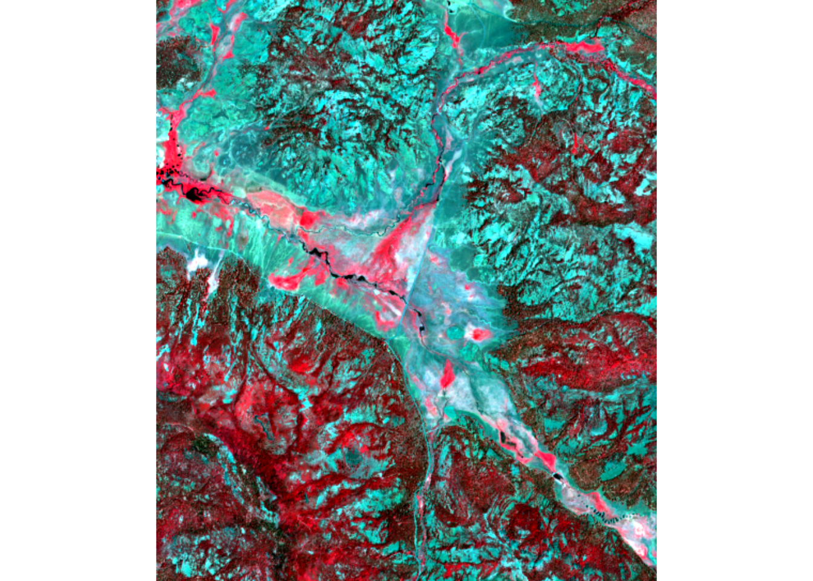
The “summer” bands are 10 through 18, so the following image display of NIR-R-G specified by numbers c(16,12,11) is comparable to c(7,3,2) from spring.
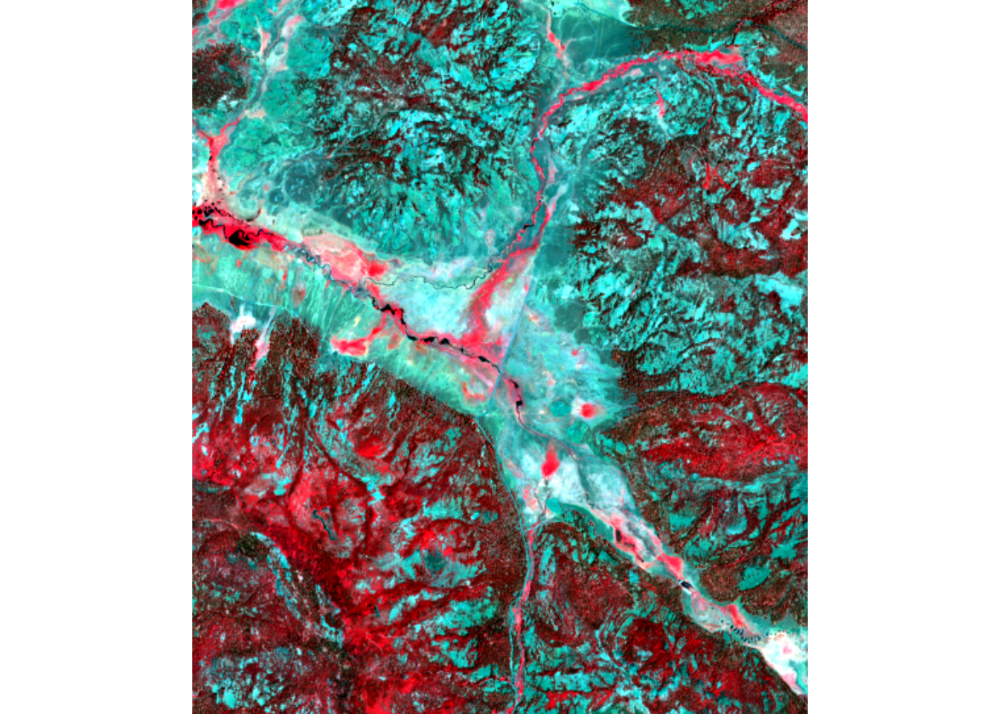
We haven’t looked at the spectral signature for the spring image, so we’ll look at a graph of all 18 bands from the combination, using the 7-class training set that includes willows as separate from hydric.trainPolys7 <- vect(ex("RCVimagery/train_polys7.shp"))
if (doCentroids) {ptsRCV <- centroids(trainPolys7)
}else{ptsRCV <- spatSample(trainPolys7, 1000, method="regular")}
extRCV <- terra::extract(sentRCV, ptsRCV)
specRCV <- aggregate(extRCV[,-1], list(ptsRCV$class), mean)
specRCVdf <- specRCV|> rename(cover=Group.1)
coverColors <- c("darkgreen","cyan", "orange","gray","blue","green","red")
pivot_specRCVdf <- specRCVdf |>
pivot_longer(cols=sp02:su12, names_to="band", values_to="reflectance")
ggplot(data=pivot_specRCVdf, aes(x=band,y=reflectance,col=cover,group=cover)) + geom_line(size=1.5) +
labs(y="Reflectance 12 bit") +
scale_color_discrete(type=coverColors)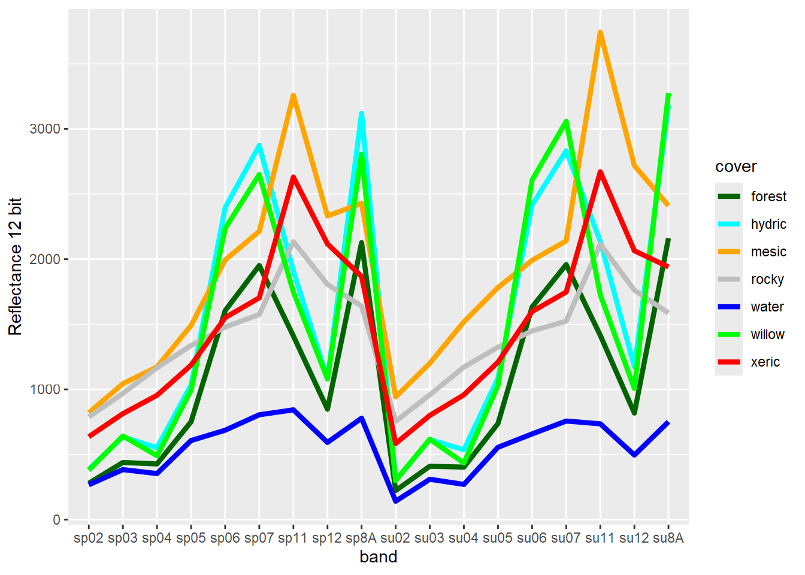
FIGURE 11.27: Spectral signature of 7-level training polygons, 20 m Sentinel-2 imagery from 20210628
11.8.2 Extract the training data (20 m spring + summer)
We’ll repeat some of the steps where we read in the training data and set up the land cover classes, leaving the 7 classes, then extract from our new 18-band image stack.
library(igisci)
trainPolys <- vect(ex("RCVimagery/train_polys7.shp"))
if (doCentroids) {ptsRCV <- centroids(trainPolys)
}else{ptsRCV <- spatSample(trainPolys, 1000, method="regular")}
LCclass <- c("forest","hydric","mesic","rocky","water","willow","xeric")
classdf <- data.frame(value=1:length(LCclass),names=LCclass)
extRCV <- terra::extract(sentRCV, ptsRCV)[,-1] # REMOVE ID
sampdataRCV <- data.frame(class = ptsRCV$class, extRCV)11.8.3 CART model and prediction (20 m spring + summer)
library(rpart)
# Train the model
cartmodel <- rpart(as.factor(class)~.,
data = sampdataRCV, method = 'class', minsplit = 5)The CART model tree for the two-season 20 m example (Figure 11.28), in contrast with the 10 m classification, ends up representing “rocky” with classified pixels (Figures 11.29 and 11.30).
library(rpart.plot)
rpart.plot(cartmodel, fallen.leaves=F, box.palette=list("Greens","Purples","Oranges","Grays","Blues","Browns","Reds"))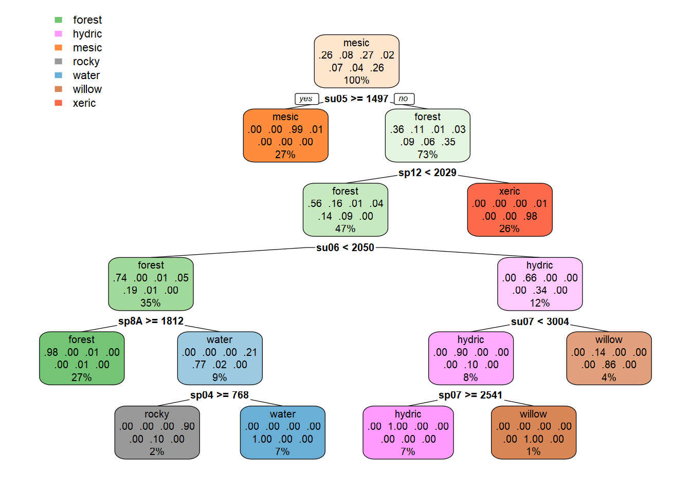
FIGURE 11.28: CART decision tree, Sentinel 20-m, spring and summer 2021 images
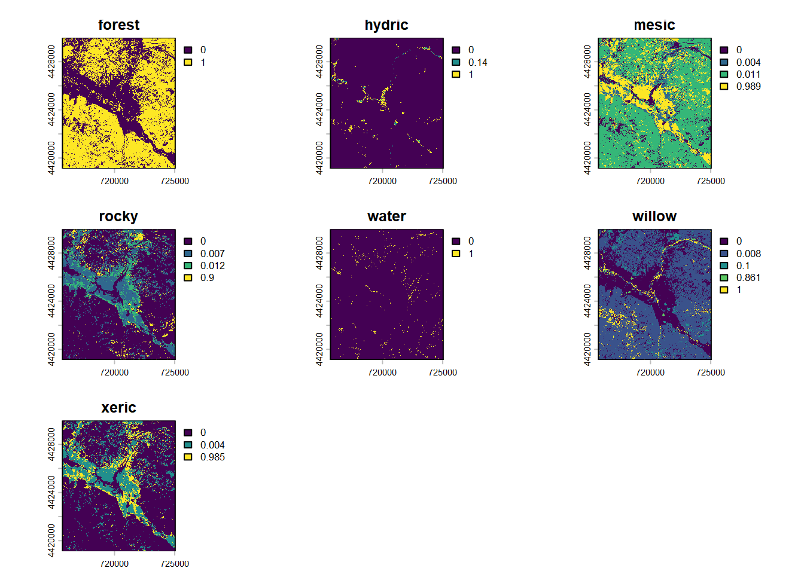
FIGURE 11.29: CART classification, probabilities of each class, Sentinel-2 20 m, 2021 spring and summer phenology
LCpheno <- which.max(CARTpred)
cls <- names(CARTpred)
df <- data.frame(id = 1:length(cls), class=cls)
levels(LCpheno) <- df# LCcolors <- c("green4","cyan","gold","grey90","mediumblue","red")
LCcolors <- c("darkgreen","cyan", "orange","gray","blue","green","red")
plot(LCpheno, col=LCcolors)library(tmap)
# LCcolors <- c("green4","cyan","gold","grey90","mediumblue","red")
LCcolors <- c("green4","cyan", "gold","gray90","mediumblue","green","red")
tm_shape(LCpheno) +
tm_raster(col="class",
col.scale=tm_scale_categorical(values=LCcolors),
col.legend=tm_legend(frame=F)) +
tm_graticules(alpha=0.5, col="gray")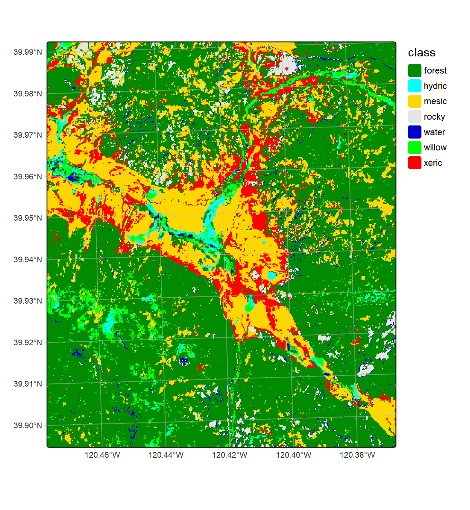
FIGURE 11.30: CART classification, highest probability class, Sentinel-2 20 m, 2021 spring and summer phenology
We might compare this plot with the previous 20 m (Figure 11.20), 10 m (Figure 11.23), and 10 m spring+summer classification (11.26).
11.8.3.1 Cross validation : CART model for 20 m spring + summer
set.seed(42)
k <- 5 # number of folds
j <- sample(rep(1:k, each = round(nrow(sampdataRCV))/k))
# table(j)x <- list()
for (k in 1:5) {
train <- sampdataRCV[j!= k, ]
test <- sampdataRCV[j == k, ]
cart <- rpart(as.factor(class)~., data=train, method = 'class',
minsplit = 5)
pclass <- predict(cart, test, na.rm = TRUE)
# assign class to maximum probablity
pclass <- apply(pclass, 1, which.max)
# create a data.frame using the reference and prediction
x[[k]] <- cbind(test$class, as.integer(pclass))
}11.8.3.2 Accuracy metrics : CART model for 20 m spring + summer
Finally, as we did above, we’ll look at the various accuracy metrics for the classification using the two-image (peak-growth spring and senescent summer) source.
Confusion Matrix
y <- do.call(rbind, x)
y <- data.frame(y)
colnames(y) <- c('observed', 'predicted')
conmat <- table(y) # confusion matrix# change the name of the columns and rows to LCclass
if(length(LCclass)==dim(conmat)[2]){
colnames(conmat) <- LCclass}else{
print("Confusion matrix column dimension/LCclass array mismatch")
print(str(LCclass))
print(str(conmat))
}
if(length(LCclass)==dim(conmat)[1]){
rownames(conmat) <- LCclass}else{
print("Confusion matrix row dimension/LCclass array mismatch")
print(str(LCclass))
print(str(conmat))
}## predicted
## observed forest hydric mesic rocky water willow xeric
## forest 261 0 0 0 0 0 0
## hydric 0 68 0 0 0 9 0
## mesic 2 0 267 0 0 0 2
## rocky 0 0 3 16 0 0 4
## water 0 0 0 0 66 0 0
## willow 4 3 0 1 1 34 0
## xeric 0 0 3 0 0 0 254Overall Accuracy
n <- sum(conmat) # number of total cases
diag <- diag(conmat) # number of correctly classified cases per class
OA20ph <- sum(diag) / n # overall accuracy
OA20ph## [1] 0.9679359kappa
rowsums <- apply(conmat, 1, sum)
p <- rowsums / n # observed (true) cases per class
colsums <- apply(conmat, 2, sum)
q <- colsums / n # predicted cases per class
expAccuracy <- sum(p*q)
kappa20ph <- (OA20ph - expAccuracy) / (1 - expAccuracy)
kappa20ph## [1] 0.9587062User and Producer accuracy
PA <- diag / colsums # Producer accuracy
UA <- diag / rowsums # User accuracy
if(length(PA)==length(UA)){
outAcc <- data.frame(producerAccuracy = PA, userAccuracy = UA)
print(outAcc)}else{
print("length(PA)!=length(UA)")
print(PA)
print(UA)
}## producerAccuracy userAccuracy
## forest 0.9775281 1.0000000
## hydric 0.9577465 0.8831169
## mesic 0.9780220 0.9852399
## rocky 0.9411765 0.6956522
## water 0.9850746 1.0000000
## willow 0.7906977 0.7906977
## xeric 0.9769231 0.9883268stats <- tribble(~classification, ~OA, ~Kappa,
"20m", round(OA20,3), round(kappa20,3),
"10m", round(OA10,3), round(kappa10,3),
"10m_2season", round(OA10ph,3), round(kappa10ph,3),
"20m_2season", round(OA20ph,3), round(kappa20ph,3),
)
DT::datatable(stats)The overall accuracy (OA) and kappa statistic suggest high accuracy in all of these classifications, given these training data (which is mostly captured in meadow locations, not the adjacent hillslopes other than clearly forested areas apparent in all imagery), though none are perfect. My impression from knowing the area, however, points to both of the 20 m classifications as having the best representation, and the two-season 18-band result looks the best to my eye.
11.9 Conclusions and Next Steps for Imagery Classification
In this chapter, we’ve seen that we can effectively classify imagery (at least produce convincing maps!), but you can probably sense from the varying results that classification isn’t always as consistent as we might expect. We saw something similar with interpolation models; you can get very different results with different methods, and so you need to consider what method and settings might be most appropriate, based on the nature of your data – its scale and density, for instance – and the goals of your research.
The next steps might be to compare some of these classifications with our field data (basically go back to the training set), but I would be tempted to do that in ArcGIS, ERDAS, or maybe QGIS after writing out our classification rasters to geotiffs. We could then also take advantage of the better cartographic capabilities of GIS and remote sensing software when working with multi-band imagery.
We’ve really only scratched the surface on remote sensing methods for imagery classification, and as noted above, readers are encouraged to enroll in remote sensing classes at your local university to learn more of its theory and relevant technology. For instance, why did we look at Sentinel-2, and not Landsat, PlanetScope, ASTER, Spot, … (the list goes on)? There are lots of satellites out there, more all the time, and understanding the the spectral-sensing capabilities of their sensors, and the spatial and temporal properties of their missions, is essential for making the right choice for your research.
There’s also the consideration of relative cost, both for the imagery itself and for your time in processing it. We chose Sentinel-2 because it’s free and served the purpose well, since the 10 and 20 m resolution worked at the scale of the study area in question. It also actually classifies more readily than finer resolution imagery. But there’s a lot more to that decision, and we also employ 1 and 5 cm pixel imagery from drone surveys of the same study area, but for a different purpose (erosion studies) and at much lower image capture frequency, given the significant field time required.
Finally, we focused on pixel classifiers. One advantage of these is that they’re reasonably similar to general classification models, whether using machine learning or not. But there are other imagery classification methods developed in the remote-sensing as well as medical-imaging communities, such as object-based classifiers which use vector geometry to aid in the classification of features. As with so much else in remote sensing methods, we’ll leave those and other methods for you to explore.
11.10 Exercises: Imagery Analysis and Classification Models
The exercises for this chapter are to apply some of the same methods above to your own downloaded Sentinel2 scene. We won’t use training sets for spectral signatures or supervised classification, but that would be the next step once you’ve collected training data, either in the field, from high-resolution imagery, or from a combination of sources.
Exercise 11.1 Download another Sentinel-2 image from Copernicus (you’ll need to create a free account to get SciHub credentials), and use it to create RGB and NIR-R-G image displays of the entire imagery scene.
For downloading (and other processing), you might also try the sen2r package. You’ll also need SciHub credentials, which you can get from https://scihub.copernicus.eu/. And while sen2r will download the entire images without it, Google Cloud SDK must be installed (see https://cloud.google.com/sdk/docs/install), which in turn will require a Python installation to do other processing.
Caution: These files can be very large, with each scene about a gigabyte, so be careful to limit how many images you’re downloading. It’s a good idea to be selective about which scenes to acquire, and the Copernicus Open Access Hub is a good interface for using visual inspection, which helps you decide if an image shows your area of interest well. For instance, while automated selection of percentage cloud cover is useful as a first step, your area of interest may be an anomaly: even a 50% cloud coverage for the overall scene may not cover your area of interest, or a 5% cloud coverage may sit right over it.
Exercise 11.2 From your imagery, find coordinates to crop with for an area of interest, then as we’ve done for Red Clover Valley, create clipped RGB and NIR-R-G displays.
Exercise 11.3 Create and display NDVI and NDGI indices from your cropped image.
Exercise 11.4 From the same cropped image, create a k-means unsupervised classification, with your choice of number of classes.